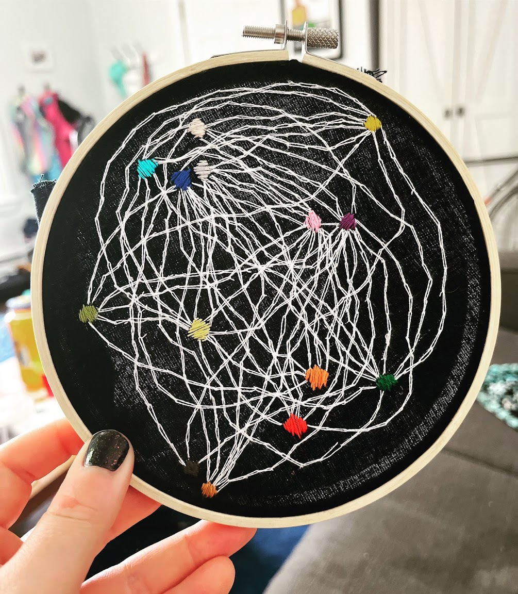
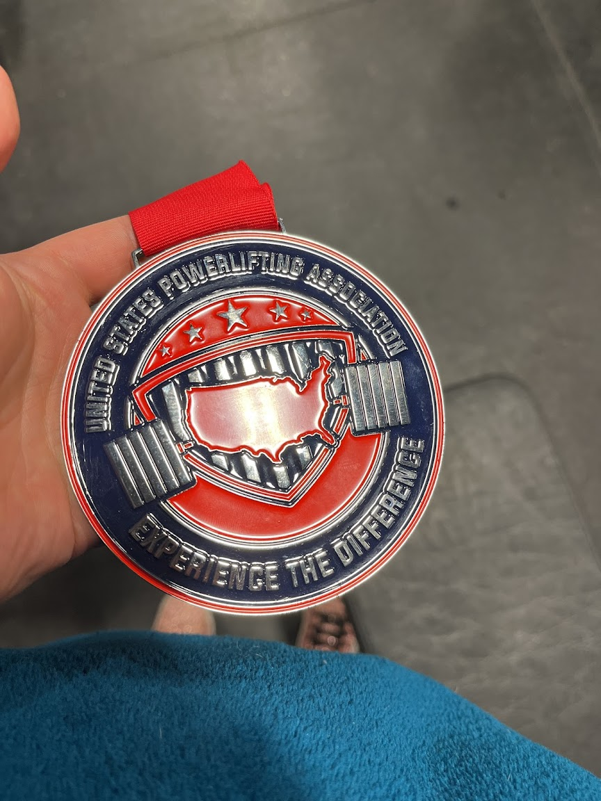
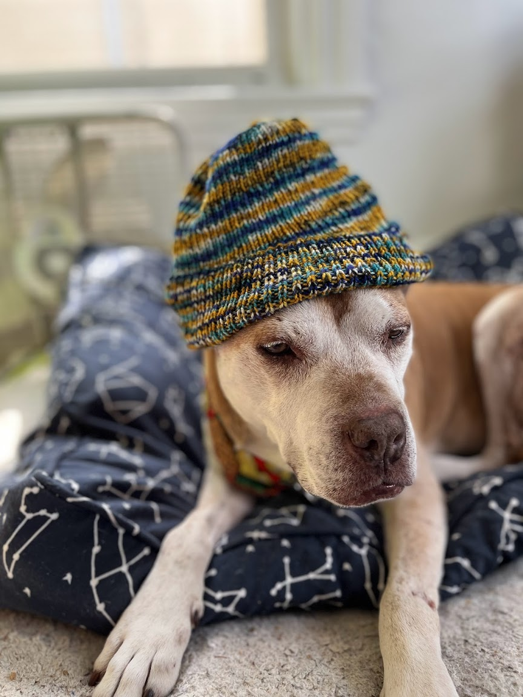

I think it's important to normalize doing things that aren't research or classes and being a person outside of grad school. Here are some of my favorite things to do!
I enjoy embroidering weird stuff; here's a degree-correlated soft random geometric graph that I coded the pattern for and embroidered.

I'm also a powerlifter, and I currently hold the USPA 75kg Rhode Island state record for the squat.

You might also find me knitting things. My dog models all of them before I give them to their recipients.
